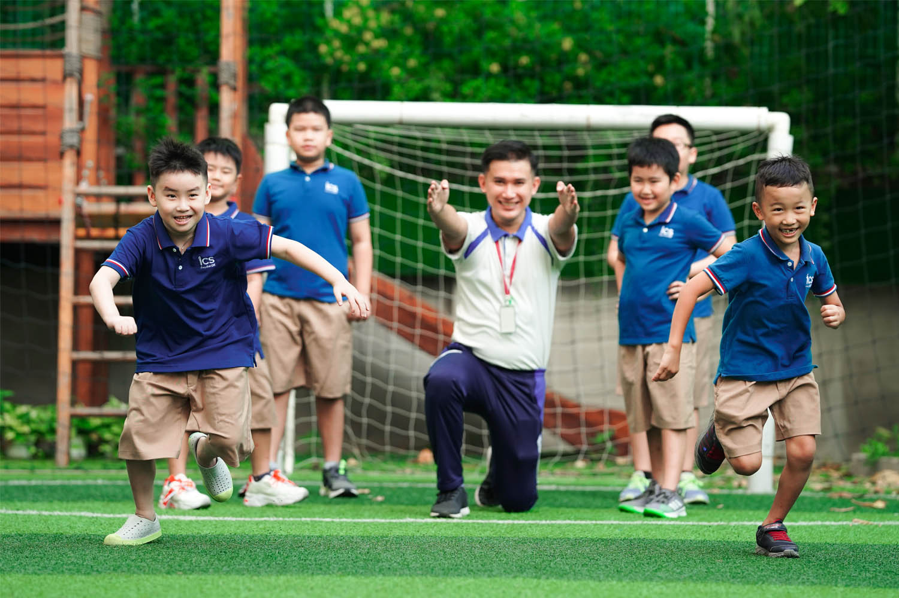
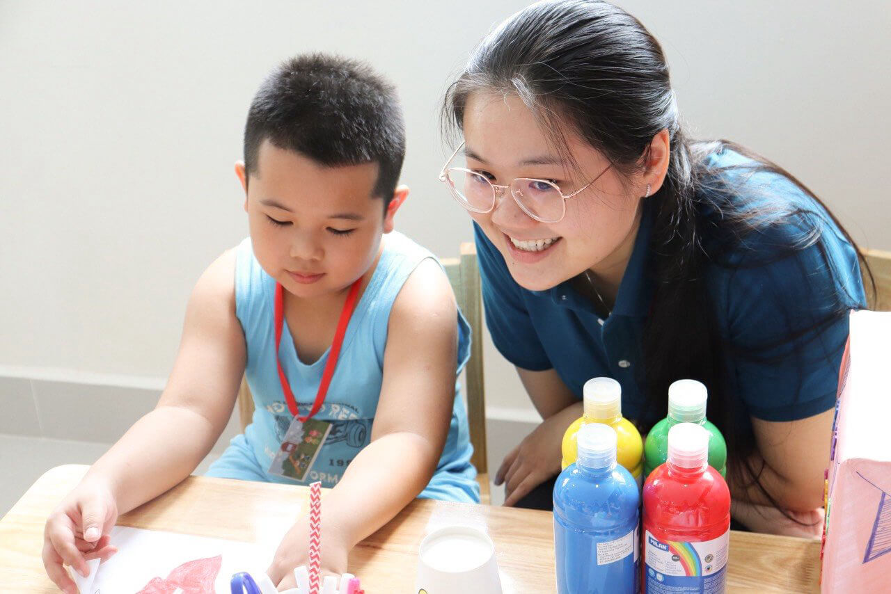
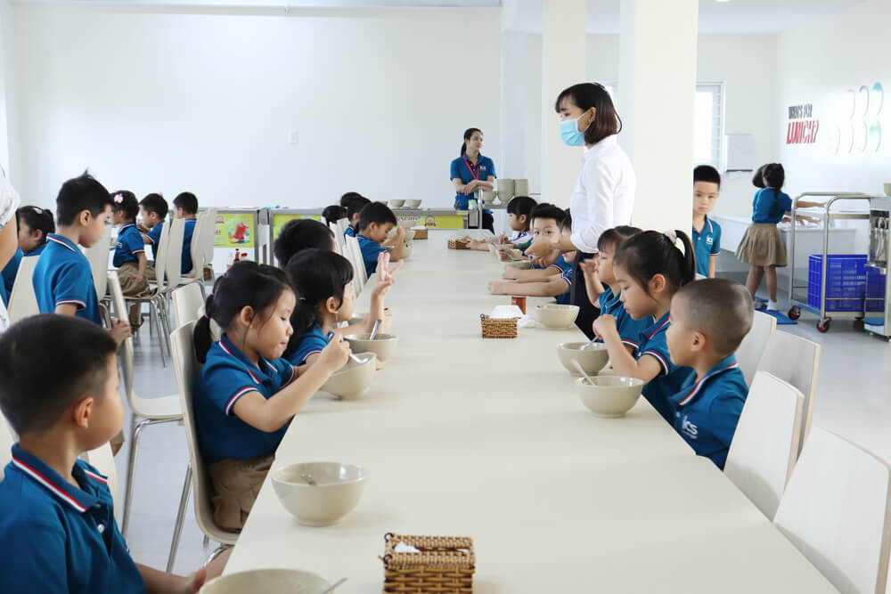

ICS (I Can School) is a school born to give children a happy educational environment. Children will have
the opportunity to respect their unique values, develop their personal potential, equip themselves with
what is most necessary to adapt to social life and prepare for the future career with Constructive
Thinking and confidence to say "I CAN" - "I CAN"
ICS is co-run by FAROS Education & Consulting - Professional consulting and transportation operation for
educational institutions, and the Design Change Movement - the world's largest children's movement is
present in Vietnam. more than 100 countries with the aim of nurturing and developing children's
constructivist thinking...
The ICS Primary Program is a combination of the national standard curriculum and the Design Thinking method. With this method, children's learning process goes through 4 steps of Feel - Imagine - Do - Share (referred to as FIDS), helping children gain real knowledge and real capacity to solve real problems, not just stop. back in books.
The school's safety and physical education program helps children have a sense of care and
self-protection. The school's routine medical care and health check-up process helps parents understand
the health status and physical problems of their children so that together with the school, they can
build a roadmap to care for and support their child's development. the best.
The school cares about the spiritual lives of students and the school counselor is a companion with
students, teachers, and parents in individual student counseling, small groups, support and giving back.
give students the ability to cope with and solve academic, relationship, emotional-behavioral
problems...
ICS is a friendly, close-knit environment that respects differences and connects individuals. Schools
actively prevent school bullying, encouraging appropriate behaviors by building social skills and values
in students. Teachers are selected with the criteria of controlling their own emotions and are
periodically trained and trained in expertise, skills, and practices to keep and stabilize their
emotions,
to become effective teachers with the application of active methods in teaching students.
The school supports students with their own potentials, talents and abilities through fostering and extra-curricular activities that foster their talents and develop their strengths (intellectual, linguistic, creative, physical) , social-emotional, etc.), while also supporting children with specific learning difficulties. The environment that respects differences and diversity of ICS helps children see their own values in the common values, knowing for the common but still preserving their own identities.
The school supports students with their own potentials, talents and abilities through fostering and extra-curricular activities that foster their talents and develop their strengths (intellectual, linguistic, creative, physical) , social-emotional, etc.), while also supporting children with specific learning difficulties. The environment that respects differences and diversity of ICS helps children see their own values in the common values, knowing for the common but still preserving their own identities.
The 5 values that ICS aspires to create for its students are:

State-of-the-art information technology (IT) infrastructure including iPads, interactive whiteboards,
technology teachers, and IT labs help the school deliver a 360° integrated technology program that
enables enhanced a personalized learning experience and possibilities for all students.
ICS aims to provide a positive experience and smoothest admissions process for families looking to join
the school community. The school accepts applications for admission from students of all nationalities
throughout the school year so that they can participate in the international environment and grow from
the school's educational program.
The school strongly encourages families to apply for admission as soon as possible to avoid being placed
on a waiting list.
Parents can choose to register via email, register online or in person at the School's Admissions Office at : 92 Nguyen Huu Canh, Ward 22, Binh Thanh District, HCMC.